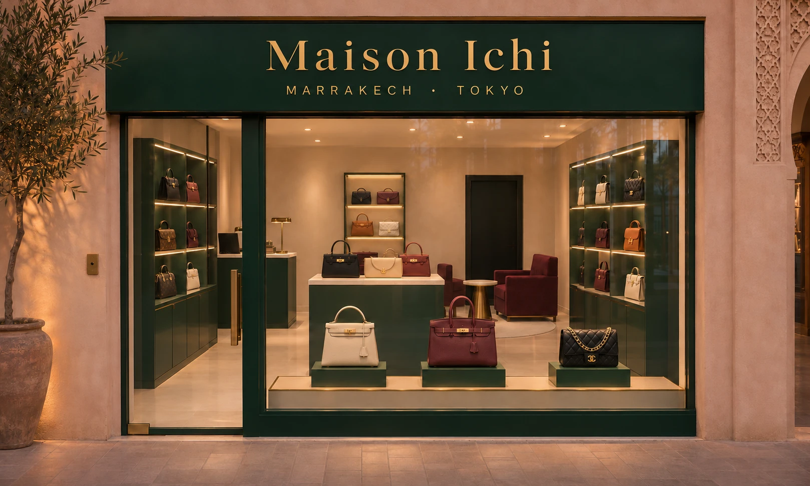
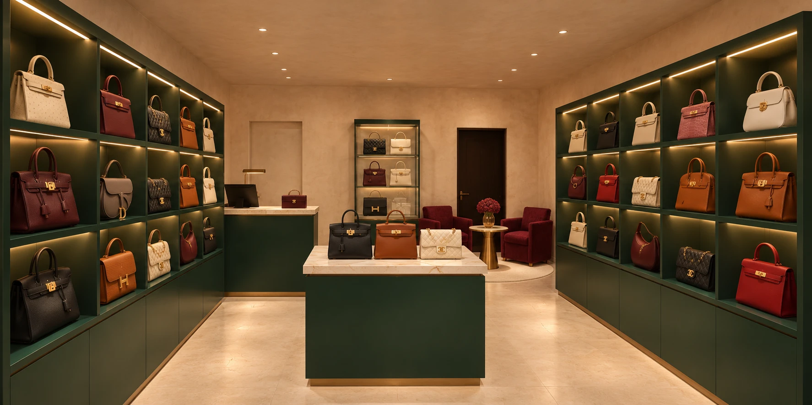
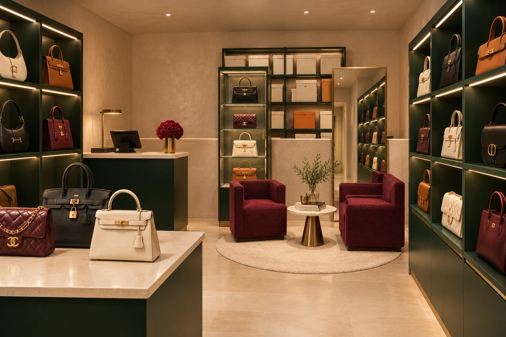
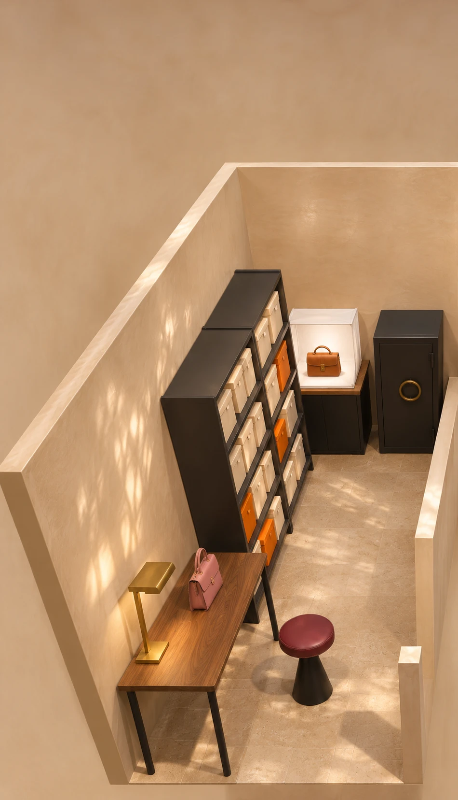

Maison Ichi · Projet de boutique · Guéliz, Marrakech
Maison Ichi est une boutique de 40 m² au cœur de Guéliz, consacrée aux sacs des grandes maisons. « Ichi » veut dire « un » en japonais : chaque pièce est choisie au Japon et présentée seule, comme un bijou.

À Marrakech, les sacs de luxe d'occasion se vendent surtout sur Instagram et WhatsApp, sans garantie, dans un marché où les contrefaçons sont nombreuses. Il manque une adresse physique de confiance.
Les sacs sont achetés directement auprès d'un fournisseur au Japon, un marché de la seconde main reconnu pour la rigueur de ses contrôles et l'état des pièces.
Les Marocaines aisées de Marrakech, celles de Casablanca et Rabat en week-end, les expatriés et les touristes de passage à Guéliz.
Un emplacement passant à Guéliz. La surface est petite, mais un sac prend peu de place : 40 m² suffisent pour une vraie boutique et une réserve.
Tous les vendeurs écrivent « authentique ». La boutique ne l'écrit nulle part : c'est le lieu, les gestes et la précision qui doivent le faire comprendre.
Un sac par niche, trois en vitrine. La rareté fait luxe, l'entassement fait douter.
Modèle, année, cuir, état, référence. Comme dans un musée, la précision montre l'expertise.
Sonnette à l'entrée, gants pour manipuler les sacs, vitrine fermée à clé pour les pièces rares.
Chaque sac vendu peut être racheté par la boutique. Personne ne rachète une contrefaçon.



La maquette se manipule : glisser pour tourner, molette ou pincement pour zoomer. Elle repose sur un local rectangulaire de 5 m de façade sur 8 m de profondeur.
Podium de 2,9 m derrière la vitre, trois sacs seulement, changés chaque semaine. L'intérieur reste visible depuis le trottoir.
Deux meubles de 3 m, niches éclairées de 60 cm, un sac par niche. Le bas est un placard fermé pour le stock courant.
Table de 1,2 × 0,8 m pour les nouveautés. Il reste 1,5 m de passage de chaque côté.
Deux fauteuils, une table basse et un grand miroir. C'est là que se font les essayages et les dépôts de sacs.
Armoire vitrée fermée à clé pour les sacs les plus chers, face à l'entrée pour attirer le regard au fond.
Comptoir de 1,25 m au fond à droite, avec vue sur toute la boutique et sur la porte. La porte de l'arrière-boutique est juste derrière.
Pour les pièces de valeur la nuit et le fonds de caisse. Hors de vue des clients.
Étagères de 2,2 m sur le mur du fond : sacs en attente, boîtes, dustbags et emballages.
Bureau avec lampe pour contrôler chaque sac avant la mise en vente et préparer les certificats.
Boîte à lumière sur table pour les photos Instagram et le site, sans sortir les sacs de la réserve.
À ce stade du projet. Le plan repose sur une hypothèse de 5 m sur 8 m : il sera recalé sur les dimensions du local retenu.